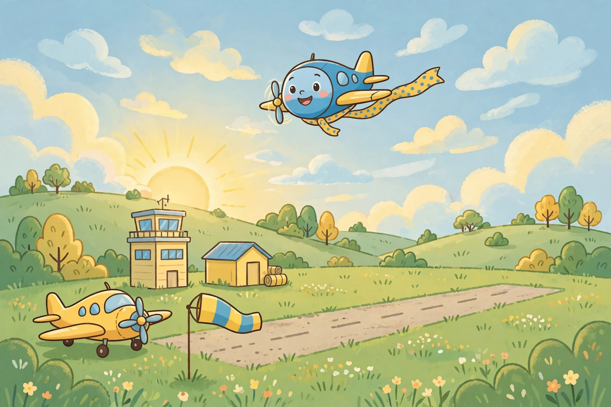
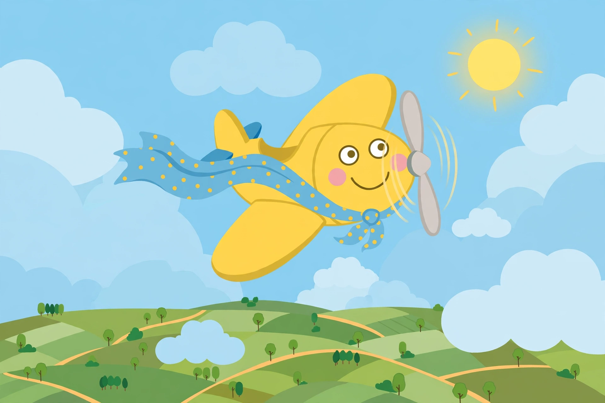

Welcome to the Skyfield — a grass airfield at sunrise, where every pilot starts in the Skyhopper T-1 Trainer.
Meet Pippa the Propeller, the mascot of this world.

The Signature Flight School teaches flying with 55 flight paths across 10 regions, 12 aircraft, and a best path pinned on top. Training content is draft — real flight instruction comes from certified instructors.
Two working tools, right here on the page. Each one says what it does and what it cannot do. Neither tool reaches the live web, and neither one needs a key.
Enter a distance in kilometres and a speed in kilometres per hour to get the flight time. The Skyhopper T-1 Trainer flies at 120 km/h: the 8.8 km Al Canyon Carve takes about 4 minutes.
Distance: km. Speed:
Enter a height in feet to get the metres. 1,000 feet is 304.8 metres.
Feet:
Designs, printables, and demos — free, downloadable, usable on the page. Every product is labeled Signature or Fun. Nothing here is for sale.
Printable flight-log pages: date, path, aircraft, distance, and notes, with room for the skill level.
Making: print the printable file, log each flight on one line, and keep the pages in order. The flights are plans, not flown hours.
A poster of the Skyfield at sunrise: the runway, the windsock, the tower, and Pippa flying overhead.
Making: print the printable file and pin it up. The airplane on it is a drawing, not a flying lesson.
A paper windsock to make and hang: striped, with a string, sized for a window.
Making: print the printable file on card, cut along the lines, roll it into a tube, tape the seam, and hang it where the breeze can reach it.
Download all product lines as a printable (text)
Pippa the Propeller once flew so high she waved at the sun, and the sun waved back with both rays. The tower logged it as "a very good day". (Fun — a made-up tale, not a record.)